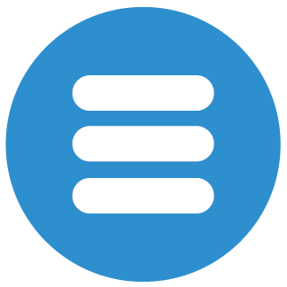

ETIC
meeting's Agenda


29th May 2021
MEETINGS:
REL: de 13:00 à 15:00 : Contact S2EE
RH: de 20:00 à 21:00 : Recrutement
S2EE: de 22:00 à 00:00 : S2EE vs OppFair
Dev-Team: de 03:00 à 05:00 : Hackatic